Subsections
Raudenbsuh & Bryk (2002) P.134-
全体平均中心化と集団平均中心化のどちらを選ぶべきか。
目的によって異なる。
- レベル１の固定効果を推定
- 構造効果とヒトレベル効果の分解
- レベル１の共変量を調整してレベル２の効果を推定
- レベル１のランダム係数の分散を推定
- レベル１のランダム係数の推定
- 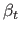
: 階層を無視して得た傾き
- 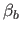
: 集団単位の分析で得られた傾き1
一般に
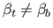
であり，仮に値が同じであっても推定精度は
の方が著しく低くなる。
- 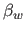
: どの集団に所属しているかという効果を抜きにしたレベル１の関係（プールされた集団内の関係）（ヒトレベルの傾きとして本来知りたいもの）
OLSだと
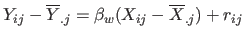
で推定できる。
また，相関比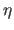
とすると，
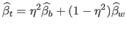
である。
つまり，
階層を無視した個人レベルの傾き = 集団単位の傾きと集団内レベル１の傾きの重み付き平均
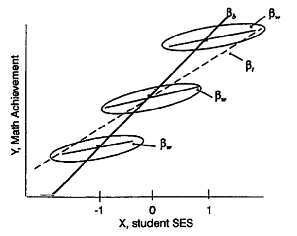
HLMでレベル１の固定効果を推定するのであれば，集団平均中心化を用いるべき。
全体平均中心化だと，レベル１の傾きは「集団内の傾きと集団間の傾きの重み付き平均」になってしまう2。
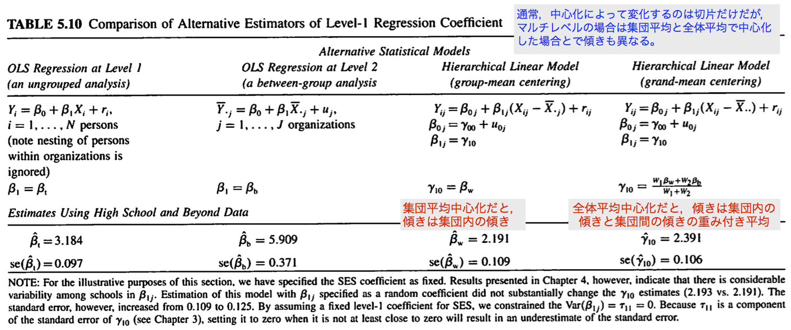
構成的効果 compositional effects・文脈効果 contextual effects:
個人レベルの を統制してもなおアグリゲートした
が
を統制してもなおアグリゲートした
が  と関連あるか
と関連あるか
OLSだと，集団平均中心化されたレベル１の
とアグリゲートされたレベル２の
を同時にモデルに入れて推定できる。
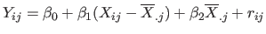
このとき，構成的（文脈）効果  は，
は，
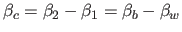
となる。（※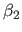
そのものではない！）3
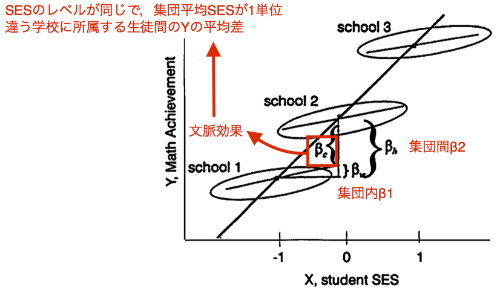
つまり，
構成的（文脈）効果 = 個人レベルの
が同じで集団レベルの
が１点異なる個人間の
の平均差
HLMだと，
- 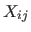
をレベル１モデルに
-
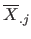
をレベル２モデルに
投入して文脈効果を推定するが，
の中心化により結果は異なる。
- 個人レベルでの
の傾き（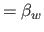
）
- 集団レベルでの
の傾き（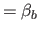
）
となり，
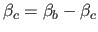
と推定する。
- 集団レベルでの
の傾き（
 ）
）
と直接文脈効果が得られる。
文脈効果はないものとすると（この仮定は？），集団平均中心化は不適切。
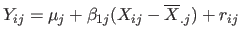
とすると，各集団について平均を考えると
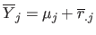
と
の集団間差が消えてしまう。
すると，
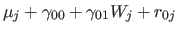
とレベル２の効果を検証しようとしても，
を調整していることにはならない。
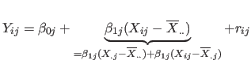
なので，
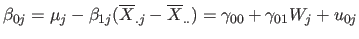
と
の調整が行われることになる。
の集団平均は通常様々である。
-
の値によって個人の集団への所属が決定される
- 組織が効果を構成する（つまり組織化されることで集団間差が発生する）
本書では，レベル１の傾きの分散を推定するには集団平均中心化
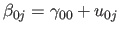
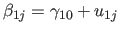
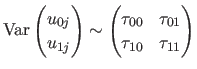
を薦める。
集団平均中心化をした場合と，全体平均中心化をした場合とでは，
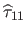
が大きく異なる。
理由は，EMのステップにおいて
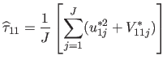
-
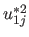
: EB残差（
とモデルパラメタが得られた場合の 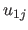
の期待値）の２乗
- 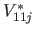
:
とモデルパラメタ推定値が得られた場合の
の事後分散
であり，EB残差の定義が中心化によって変わるため。
切片と傾きの相関が大きくなければ，切片が信頼性不足のために shrink したとしても傾きには影響を及ぼさない（HS&Bデータではそう）。
- 実際には観測されていない
の範囲への外挿となるため，レベル１の切片の信頼性が低くOLSに比べてより shrinkage が大きくなる。
- 切片は調整済み平均のため，切片が shrink すれば傾きもそれにあわせて shrink する。
 （平均的な傾きに似通っていくため）
が小さくなる。
（平均的な傾きに似通っていくため）
が小さくなる。
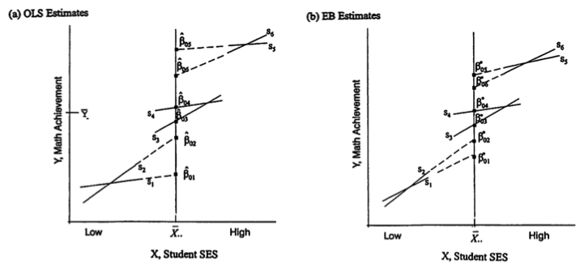
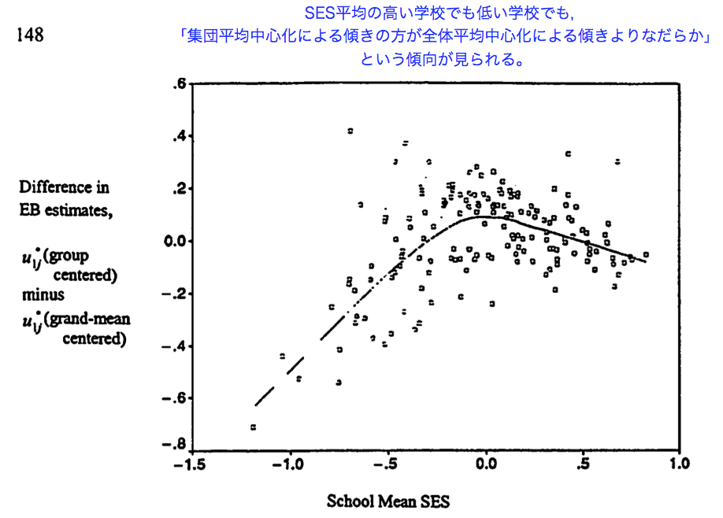
もし
の集団平均が集団によって実質的に異なるのであれば，集団平均中心化を用いたほうがレベル１のランダム係数はよりロバストに推定できると考えられる。
Taichi Okumura
2017-11-24